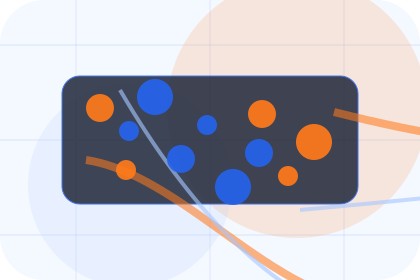
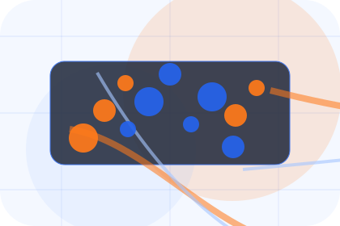
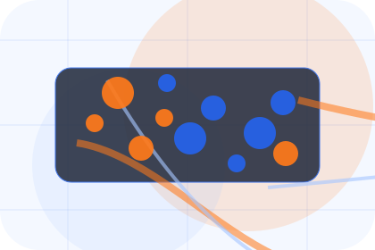
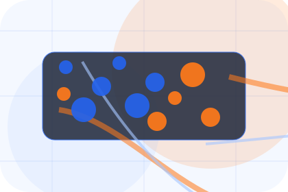
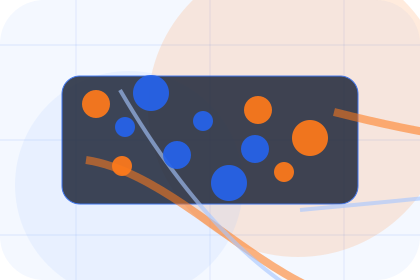
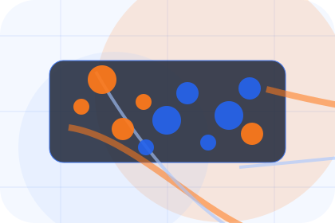
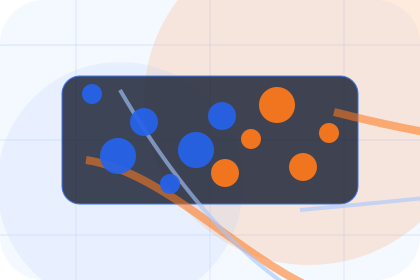
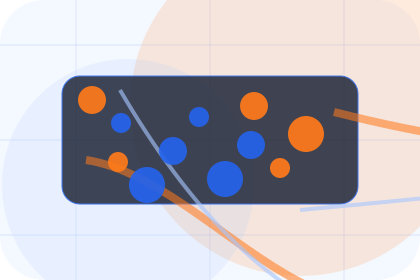
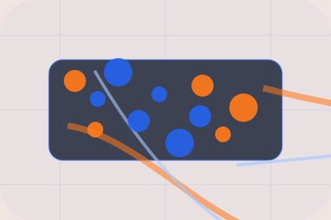

Context
Visibility gives the page a specific angle instead of repeating the navigation label.
Logistics
Global freight command for visibility and delivery control.

Home / 02
Challenge frames the pressure behind the visit, then connects it to a practical path visitors can recognise and act on.
The copy avoids blame and panic. It shows the common friction, the practical consequence, and the calmer route Chain uses to move people forward.
Open CompanyChain structures challenge around pressure, consequence, and a clear next route so visitors can compare the block quickly before they request a quote.
Request QuoteHome / 03
Visibility adds technical context to the home route, using the global freight command structure to support visibility and delivery control before visitors choose a next step.
Chain uses tracking dashboard cards and focused copy to make the decision easier to scan, aligning the section with visibility and delivery control rather than filling space.
Open Services

Visibility gives the page a specific angle instead of repeating the navigation label.
Home / 04
Promise defines the better state Chain is built to create, with enough detail to make the promise believable.
A freight-command site with shipment dashboards, network maps, quote modules, and status proof. The section grounds that direction in concrete benefits, visible tradeoffs, and a next route visitors can use when the promise feels relevant.
Open NetworkPromise defines what becomes clearer, easier, or safer when Chain is the chosen route.

The benefit is tied to visibility and delivery control, not a vague quality claim.

Visitors get a linked path to compare the promise against services, standards, or examples.
Home / 05
Services explains the practical scope, best-fit situations, and expected outcome so logistics visitors can compare options without decoding jargon.
The section keeps the offer concrete: what is included, who it is best for, what decision it supports, and which linked route gives the deeper detail.
Open ServicesWho should use services and when it belongs in the home journey.
The practical benefit visitors should expect after choosing this route.

Where to compare details, pricing, support, or contact options before committing.
Shipment dashboard hero
Select the closest route and Chain keeps the next step, proof, and follow-up expectation aligned with visibility and delivery control.
Home / 06
Network explains the practical scope, best-fit situations, and expected outcome so logistics visitors can compare options without decoding jargon.
The section keeps the offer concrete: what is included, who it is best for, what decision it supports, and which linked route gives the deeper detail.
Open IndustriesWho should use network and when it belongs in the home journey.
The practical benefit visitors should expect after choosing this route.
Where to compare details, pricing, support, or contact options before committing.
Home / 07
Tracking adds technical context to the home route, using the global freight command structure to support visibility and delivery control before visitors choose a next step.
Chain uses tracking dashboard cards and focused copy to make the decision easier to scan, aligning the section with visibility and delivery control rather than filling space.
Open PricingTracking gives the page a specific angle instead of repeating the navigation label.
The tracking dashboard cards show what to compare, what to avoid, and what matters most for logistics, delivery & supply chain visitors.
The final cue points to a useful internal route so the section keeps the journey moving.
Home / 08
Proof shows what changes after the work: clearer decisions, visible progress, and proof points that connect the offer to real outcomes.
The layout connects before-and-after thinking with measured outcomes, making the result easy to scan without promising what the business cannot guarantee.
Open SupportThe uncertainty, delay, or missed opportunity visitors bring into proof.
The clearer, safer, or more valuable state Chain is designed to support.
The visible cue that connects proof to a believable decision, not a loose claim.
Home / 09
Questions handles buying doubts directly so visitors can understand timing, fit, limits, and the safest next step.
Answers are short by design: enough to remove hesitation, not so much that the page turns into documentation before the visitor can act.
Open Contact
Questions gives the page a specific angle instead of repeating the navigation label.

The tracking dashboard cards show what to compare, what to avoid, and what matters most for logistics, delivery & supply chain visitors.

The final cue points to a useful internal route so the section keeps the journey moving.
Chain starts with a focused intake so the recommendation matches the visitor's context, risk, timing, and readiness.
Each route explains inclusions, exclusions, documents, timing, and the decision points that affect final delivery.
The theme uses global freight command, tracking dashboard cards, and tracking mockup, quote calculator, network map filter rather than a shared template rhythm.
Shipment dashboard hero
Select the closest route and Chain keeps the next step, proof, and follow-up expectation aligned with visibility and delivery control.
Home / 10
Chain closes the home route with a clear action, a quick reminder of the value, and a low-friction way to request a quote.
Visitors who are ready can use the primary action. Visitors who are still comparing can scan the section links, proof, and support routes before they request a quote.
Request QuoteThe final block keeps the choice simple: act now, compare one more proof route, or send enough detail for a focused response.
Request Quotevisibility and delivery control
A freight-command site with shipment dashboards, network maps, quote modules, and status proof. Home ends with a direct path to request a quote, plus enough context for visitors who still need to compare.

Request Quote